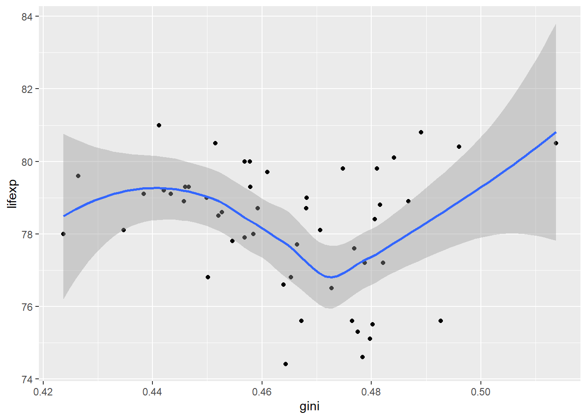

If you restarted R, you will need to load the packages for this workshop again.
library(pacman)
Warning: package 'pacman' was built under R version 4.2.3
pacman::p_load(# Spatial packages tidycensus, sf, sfdep, sfarrow, ggspatial, cartogram,# Data importing, wrangling, and plotting packages tidyverse, usethis, readr, patchwork, gganimate)
3.2 Importing Data
Let’s try importing the files that we exported earlier. Use the sf::arrow::st_read_parquet() function to read our exported parquet files as sf objects in R.
Reading layer `lifexp_us_shp' from data source
`C:\Users\steph\OneDrive - cumc.columbia.edu\Phi\04 TEACH\Tutorials\workshop-2024-iaphs-rspatial\data\lifexp_us_shp\lifexp_us_shp.shp'
using driver `ESRI Shapefile'
Simple feature collection with 150 features and 3 fields
Geometry type: MULTIPOLYGON
Dimension: XY
Bounding box: xmin: -3111747 ymin: -1697746 xmax: 2258200 ymax: 1565782
Projected CRS: USA_Contiguous_Albers_Equal_Area_Conic
3.3 Static Maps
3.3.1 Map Only Boundaries
Let’s first create a static map of the Census tract boundaries of Missouri. Using the ggplot2 package, we can plot the spatial data using the geom_sf() function. We can add a title with the labs() function.
3.3.1.1 Combining Maps to Compare Projected and Unprojected Maps
Let’s also plot our unprojected plot from earlier. Using syntax from the patchwork package, we can use the + operator to plot these two maps side by side.
Use the ggspatial::annotation_scale() to add in a scalebar to the map.
The unit_category = 'imperial' argument is used to change the units in the scale bar from metric to imperial units (showing miles instead of kilometers).
A choropleth map is a thematic map in which areas are shaded or patterned in proportion to the value of a variable being represented. This type of map is commonly used to visualize how a measurement varies across a geographic area, such as population density or median income.
3.3.2.1.1 … Adding in a variable to create choropleth map
In ggplot::geom_sf(), use the fill argument in the aes() function to specify a variable that you would like to visualize In our example, we are visualizing the geographic distribution of those who have a percentage high school education.
The gray areas represent tracts with missing data.
Use the low and high arguments in the scale_fill_continuous() to specify colors to use for low and high values on a continuous scale.
smap_2 <- smap_1 +scale_fill_continuous(low ='white', high ='blue')smap_2
3.3.2.2 Multiple Variables
3.3.2.2.1 Prepare Long Dataset with Life Expectancy and Census Variables
Use the tidyr::pivot_longer() function in order to create one column for the percent values for those with less than a high school education or who were foreign-born in our dataset.
3.3.2.2.3 … Adding in Different legend colors, Theme, Title, North Arrow, and Scalebar
Use the previous functions we reviewed to polish our map and add different legend colors, theme, a title, a north arrow, and a scalebar.
Use the height and width arguments in the ggspatial::annotation_north_arrow() function in order to change the size of the north arrow and the style argument to change it to a different style
We can create the map using the previous functions in one step.
multmap <- mo2015_sf_long |>ggplot() + ggplot2::geom_sf() +geom_sf(aes(fill = value)) +facet_wrap(vars(variable_name), ncol =3) +scale_fill_continuous(low ='white', high ='blue') +theme_void() +labs(title ='CHD Prevalence and Educational Attainment in New York') + ggspatial::annotation_north_arrow(location ='tl', height =unit(0.5, "cm"), width =unit(0.5, "cm"),style =north_arrow_orienteering(text_size =1)) + ggspatial::annotation_scale(unit_category ='imperial')multmap
3.3.3 Cartogram
Cartograms are maps where the geometry of the areas are changed to convey information. In this example, we are using the cartogram::cartogram_dorling() function to create a type of cartogram that are represented by circles. First we need to prep our data. We will weight by an exponentiated version of the Gini coefficient so we can have circles that are more different in size.
Use the cartogram::cartogram_dorling() function to create a type of cartogram that are represented by circles.
The k = 1 argument is used to create smaller circles so they can later fit onto the map.
acs_dorling_2018 <- acs_states_sf_2018 |> cartogram::cartogram_dorling(weight ="gini_exp", k =1)
When comparing the gini coefficient with life expectancy, we can first visualize the relationship with a scatterplot.
acs_dorling_2018 |> dplyr::left_join(lifexp_us_sf_2018 |>as_tibble(), by ="state") |>ggplot(aes(x = gini, y = lifexp)) +geom_point() +geom_smooth()
`geom_smooth()` using method = 'loess' and formula = 'y ~ x'

When plotting the cartogram, the overall relationship is harder to discern but the cartogram allows us to see comparisons by state. This gives us some more information.
We see high income inquality and low life expectancy in the South.
But this relationship isn’t consistent. We also see high income inequality and high life expectancy in a state like California.
ggplot() +geom_sf(data = lifexp_us_sf_2018, aes(fill = lifexp)) +geom_sf(data = acs_dorling_2018, aes(alpha = gini, group = state), fill ="red") +scale_fill_gradient(low ="white", high ="forestgreen") +scale_alpha_continuous(range =c(0, 0.5))
3.4 Animated Maps
Animated maps are a great way to visualize changes over time. In this example, we will create an animated map that shows this relationship between life expectancy and the Gini coefficient over time.